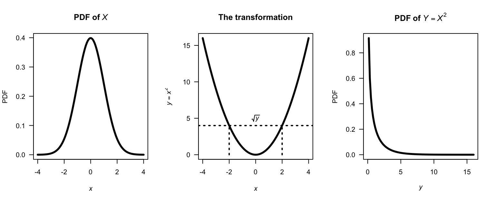
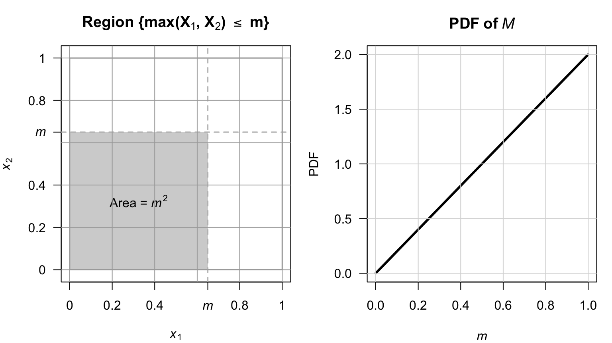
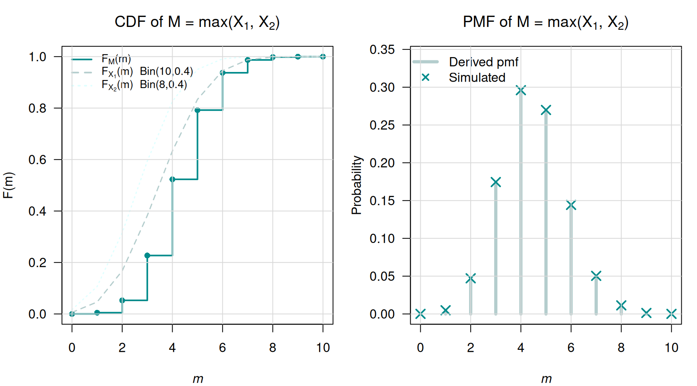

12 Transformations of bivariate random variables
On completion of this chapter, you should be able to:
- find the joint distribution of two transformed variables in a bivariate situation, using the change of variable method.
- find the joint distribution of two transformed variables in a bivariate situation, using the distribution function method.
12.1 Bivariate change of variable method
12.1.1 Bivariate discrete case
The bivariate discrete case is similar to the univariate discrete case. Consider a joint probability function \(p_{X_1, X_2}(x_1, x_2)\) of two discrete random variables \(X_1\) and \(X_2\) defined on the two-dimensional set of points \(R^2_X\) for which \(p(x_1, x_2) > 0\). Two one-to-one transformations need to be defined: \[ y_1 = u_1( x_1, x_2)\qquad\text{and}\qquad y_2 = u_2( x_1, x_2) \] that map \(R^2_X\) onto \(R^2_Y\) (the two-dimensional set of points for which \(p(y_1, y_2) > 0\)). Denote the two inverse functions as \[ x_1 = w_1( y_1, y_2)\qquad\text{and}\qquad x_2 = w_2( y_1, y_2). \] Then the joint probability function of the new (transformed) random variables is \[ p_{Y_1, Y_2}(y_1, y_2) = p_{X_1, X_2}\big( w_1(y_1, y_2), w_2(y_1, y_2)\big) \qquad \text{where $(y_1, y_2)\in R^2_Y$}. \]
Example 12.1 (Transformation discrete (bivariate)) Let the two discrete random variables \(X_1\) and \(X_2\) have the joint probability function shown in Table 12.1. Consider the two one-to-one transformations \[ Y_1 = |X_1 + X_2| \qquad\text{and}\qquad Y_2 = X_1 + 1. \] The joint probability function of \(Y_1\) and \(Y_2\) can be found by noting where the \((x_1, x_2)\) pairs are mapped to in the \(y_1, y_2\) space:
| \(\Pr(x_1, x_2)\) | \((x_1, x_2)\) | \(\mapsto\) | \((y_1,y_2)\) |
|---|---|---|---|
| \(0.3\) | \((-1, 0)\) | \(\mapsto\) | \((1, 1)\) |
| \(0.1\) | \((-1, 1)\) | \(\mapsto\) | \((0, 2)\) |
| \(0.1\) | \((-1, 2)\) | \(\mapsto\) | \((1, 3)\) |
| \(0.2\) | \((1, 0)\) | \(\mapsto\) | \((1, 1)\) |
| \(0.2\) | \((1, 1)\) | \(\mapsto\) | \((2, 2)\) |
| \(0.1\) | \((1, 2)\) | \(\mapsto\) | \((3, 3)\) |
The joint probability function can then be constructed as shown in Table 12.2.
| \(x_2 = 0\) | \(x_2 = 1\) | \(x_2 = 2\) | |
|---|---|---|---|
| \(x_1 = -1\) | \(0.3\) | \(0.1\) | \(0.1\) |
| \(x_1 = +1\) | \(0.2\) | \(0.2\) | \(0.1\) |
| \(y_1 = 0\) | \(y_1 = 1\) | \(y_1 = 2\) | \(y_1 = 3\) | |
|---|---|---|---|---|
| \(y_2 = 1\) | \(0.0\) | \(0.5\) | \(0.0\) | \(0.0\) |
| \(y_2 = 2\) | \(0.1\) | \(0.0\) | \(0.2\) | \(0.0\) |
| \(y_2 = 3\) | \(0.0\) | \(0.1\) | \(0.0\) | \(0.1\) |
Sometimes, a joint probability function of two random variables is given, but only one new random variable is required. In this case, a second (dummy) transformation is used, usually a very simple transformation.
Example 12.2 (Transformation (bivariate)) Let \(X_1\) and \(X_2\) be two independent Poisson random variables: \[\begin{align*} p_{X_1}(x_1) &= \frac{\lambda_1^{x_1} \exp(-\lambda_1)}{x_1!}\ \text{for $x_1 = 0, 1, 2, \dots$} \quad\text{and}\\ p_{X_2}(x_2) &= \frac{\lambda_2^{x_2} \exp(-\lambda_2)}{x_2!}\ \text{for $x_2 = 0, 1, 2, \dots$}. \end{align*}\] The joint probability function is \[ p_{X_1, X_2}(x_1, x_2) = \frac{\lambda_1^{x_1} \lambda_2^{x_2} \exp( -\lambda_1 - \lambda_2 )}{x_1!\, x_2!} \quad\text{for $x_1$ and $x_2 = 0, 1, 2, \dots$} \] Suppose we wish to find the probability function of \(Y_1 = X_1 + X_2\).
Consider the two one-to-one transformations (where \(Y_2 = X_2\) is just a dummy transformation since we need to work with two transformations): \[\begin{align} y_1 &= x_1 + x_2 = u_1(x_1, x_2)\\ y_2 &= x_2\phantom{{} + x_2} = u_2(x_1, x_2) \end{align}\] which map the points in \(\mathcal{R}^2_X\) onto \[ \mathcal{R}^2_Y = \left\{ (y_1, y_2)\mid y_1 = 0, 1, 2, \dots; y_2 = 0, 1, 2, \dots, y_1\right\}. \] \(Y_2\) is a dummy transform, and is chosen to be very simple; any second transform could be chosen (since it is not of direct interest). The inverse functions are \[\begin{align*} x_1 &= y_1 - y_2 = w_1(y_1, y_2)\\ x_2 &= y_2 \phantom{{} - y_2} = w_2(y_2) \end{align*}\] by rearranging the original transformations. Then the joint probability function of \(Y_1\) and \(Y_2\) is \[\begin{align*} p_{Y_1, Y_2}(y_1, y_2) &= p_{X_1, X_2}\big( w_1(y_1, y_2), w_2(y_1, y_2)\big) \\ &= \frac{\lambda_1^{y_1 - y_2}\lambda_2^{y_2} \exp(-\lambda_1 - \lambda_2)}{(y_1 - y_2)! y_2!}\quad \text{for $(y_1, y_2)\in \mathcal{R}^2_Y$}. \end{align*}\] Recall that we seek the probability function of just \(Y_1\), so we need to find the marginal probability function of \(p_{Y_1, Y_2}(y_1, y_2)\). The marginal probability function of \(Y_1\) is \[ p_{Y_1}(y_1) = \sum_{y_2 = 0}^{y_1} p_{Y_1, Y_2}(y_1, y_2) = \sum_{y_2 = 0}^{y_1} \frac{\lambda_1^{y_1 - y_2}\lambda_2^{y_2} \exp(-\lambda_1 - \lambda_2)}{(y_1 - y_2)!\, y_2!}. \] To simplify, first multiply and divide by \(y_1!\): \[\begin{align*} p_{Y_1}(y_1) &= \frac{\exp(-\lambda_1 - \lambda_2)}{y_1!} \sum_{y_2 = 0}^{y_1} \frac{y_1!}{(y_1 - y_2)!\, y_2!} \lambda_1^{y_1 - y_2}\lambda_2^{y_2}\\ &= \frac{\exp(-(\lambda_1 + \lambda_2))}{y_1!} \sum_{y_2 = 0}^{y_1} \binom{y_1}{y_2} \lambda_1^{y_1 - y_2}\lambda_2^{y_2}.\\ \end{align*}\] Then, using the binomial theorem (Sect. B.1), this simplifies to \[\begin{align*} p_{Y_1}(y_1) &= \frac{\exp\big(-(\lambda_1 + \lambda_2)\big)}{y_1!} (\lambda_1 + \lambda_2)^{y_1} \\ &= \frac{\exp(-\Lambda)}{y_1!} \Lambda^{y_1} \quad\text{for $y_1 = 0, 1, 2, \dots$} \end{align*}\] where \(\Lambda = \lambda_1 + \lambda_2\). This is the probability function of a Poisson random variable (Def. 6.12) with mean \(\Lambda\). Thus \(Y_1 = X_1 + X_2\) has a Poisson distribution with a mean of \(\lambda_1 + \lambda_2\): the sum of two independent Poisson random variables is also a Poisson random variable.
12.1.2 Bivariate continuous case
With two continuous random variables \((X_1, X_2)\) with a joint PDF \(f_{X_1, X_2}(x_1, x_2)\), two transformations are needed to transform them into two new random variables \((Y_1, Y_2)\): \[ Y_1 = u_1(X_1, X_2) \quad \text{and} \quad Y_2 = u_2(X_1, X_2). \] The joint PDF of the new variables is \[ f_{Y_1, Y_2}(y_1, y_2) = f_{X_1, X_2}(x_1, x_2) \cdot |\det J| \] where \(|\det(J)|\) is the absolute value of the Jacobian determinant: \[ J = \begin{bmatrix} {\partial x_1}/{\partial y_1} & {\partial x_1}/{\partial y_2} \\[6pt] {\partial x_2}/{\partial y_1} & {\partial x_2}/{\partial y_2} \end{bmatrix}, \] so that \[ \det(J) = \frac{\partial x_1}{\partial y_1} \frac{\partial x_2}{\partial y_2} - \frac{\partial x_1}{\partial y_2} \frac{\partial x_2}{\partial y_1}. \] The Jacobian plays an equivalent role to \(\left|dx/dy\right|\) in the univariate case.
Example 12.3 (Transformation continuous (bivariate)) Let \(X_1\) and \(X_2\) be independent exponential random variables with \(\lambda = 1\), such that both PDFs are \[ f_{X_1}(x_1) = \exp(-x_1)\quad\text{for $x_1 > 0$} \quad\text{and}\quad f_{X_2}(x_2) = \exp(-x_2)\quad\text{for $x_2 > 0$}. \] That is, \(X_1, X_2 \overset{\text{iid}}{\sim} \text{Exponential}(\lambda = 1)\). Consider the two transformations \(Y_1 = X_1 + X_2\) (the sum) and \(Y_2 = X_1 / X_2\) (the ratio). Then, \(y_1 > 0\) and \(y_2 > 0\).
Since the random variable \(X_1\) and \(X_2\) are iid, the joint PDF of \(X_1\) and \(X_2\) is \[ f_{X_1, X_2}(x_1, x_2) = \exp(-x_1) \cdot \exp(-x_2) = \exp\left(-(x_1 + x_2)\right) \quad \text{for $x_1, x_2 > 0$}. \] Inverting the transformations gives \[ x_1 = \frac{y_1 y_2}{1 + y_2} \quad\text{and}\quad x_2 = \frac{y_1}{1 + y_2}. \] The Jacobian requires the four partial derivatives: \[ \begin{array}{ll} \displaystyle \frac{\partial x_1}{\partial y_1} = \frac{y_2}{1+y_2};\quad & \quad\displaystyle \frac{\partial x_1}{\partial y_2} = \frac{y_1(1+y_2) - y_1 y_2}{(1+y_2)^2} = \frac{y_1}{(1+y_2)^2};\\[12pt] \displaystyle \frac{\partial x_2}{\partial y_1} = \frac{1}{1+y_2};\quad & \quad\displaystyle \frac{\partial x_2}{\partial y_2} = \frac{-y_1}{(1+y_2)^2}. \end{array} \] So the Jacobian determinant is \[\begin{align*} \det J &= \left( \frac{y_2}{1+y_2} \cdot \frac{-y_1}{(1+y_2)^2} \right) - \left( \frac{1}{1+y_2} \cdot \frac{y_1}{(1+y_2)^2} \right)\\ &= \frac{-y_1 y_2 - y_1}{(1+y_2)^3}\\ &= \frac{-y_1(y_2 + 1)}{(1+y_2)^3}. \end{align*}\] Finally, substitute \(x_1\) and \(x_2\) and \(\det J\) into the formula: \[ f_{Y_1, Y_2}(y_1, y_2) = \exp(-(x_1 + x_2)) \cdot \left| \frac{-y_1}{(1 + y_2)^2} \right|. \] Since \(x_1 + x_2 = y_1\), write \[ f_{Y_1, Y_2}(y_1, y_2) = \frac{y_1 \exp(-y_1)}{(1+y_2)^2}\quad\text{for $y_1 > 0$ and $y_2 > 0$}. \]
Example 12.4 (Distribution of squared normal rv) Let \(X \sim N(0, 1)\) and \(Y = X^2\). Since \(u(x) = x^2\) is not monotone on \(\mathbb{R}\), the change of variable method requires partitioning; the distribution function method is simpler.
First, see that the support for \(X\) is over \(\mathbb{R}\), but the support for \(Y = X^2\) must be over the non-negative reals. Furthermore, since individual points have zero probability for continuous random variables, \(X = 0\) is not technically possible, so the support is best given as \((0, \infty)\) or \([0, \infty)\) (see Fig. 12.1).
So, for \(y > 0\): \[ F_Y(y) = \Pr(X^2 \leq y) = \Pr(-\sqrt{y} \leq X \leq \sqrt{y}) = F_X(\sqrt{y}) - F_X(-\sqrt{y}) = 2F_X(\sqrt{y}) - 1. \]
Differentiating: \[ f_Y(y) = 2 f_X(\sqrt{y}\,) \cdot \frac{1}{2\sqrt{y}} = \frac{1}{\sqrt{y}} \cdot \frac{1}{\sqrt{2\pi}} \exp(-y/2) = \frac{y^{1/2 - 1} \exp(-y/2)}{2^{1/2}\,\Gamma(1/2)}, \quad y > 0. \] Notice that \(Y > 0\); if \(Y = 0\) the PMF is undefined. The final expressions identifies this as the \(\chi^2(1)\) distribution (i.e., \(\text{Gamma}(1/2,\, 1/2)\)).

FIGURE 12.1: A normal distribution (left panel), the transformation (centre panel), and the resulting chi-squared distribution (right panel).
12.2 Bivariate distribution function method
12.2.1 Bivariate continuous case
Let \((X_1, X_2)\) have joint PDF \(f_{X_1, X_2}(x_1, x_2)\). To find the distribution of \(Y = u(X_1, X_2)\) (a scalar function of \(X_1\) and \(X_2\)), compute \[ F_Y(y) = \Pr(u(X_1, X_2) \leq y) = \iint_{\{(x_1,x_2):\, u(x_1,x_2) \leq y\}} f_{X_1, X_2}(x_1, x_2)\, dx_1\, dx_2, \] then differentiate: \(f_Y(y) = F_Y'(y)\).
The key step is characterising the region of integration \(\{u(x_1,x_2) \leq y\}\) carefully as a function of \(y\), paying attention to how its boundaries move as \(y\) changes. This is often where the difficulty lies, and a sketch of the support is strongly recommended.
Example 12.5 (Distribution of $M = \max(X_1, X_2)$ for independent uniforms distributions) Let \(X_1, X_2 \overset{\text{iid}}{\sim} \text{Uniform}(0,1)\) with joint PDF \(f_{X_1, X_2}(x_1, x_2) = 1\) on the unit square (Fig. 12.2, left panel). Define \(M = \max(X_1, X_2)\).
The event \(\{M \leq m\}\) is equivalent to \(\{X_1 \leq m \text{ and } X_2 \leq m\}\) (see Fig. 12.2), so for \(m \in [0, 1]\): \[ F_M(m) = \Pr(X_1 \leq m,\, X_2 \leq m) = m \cdot m = m^2. \] Differentiating, the PDF is \[ f_M(m) = 2m, \quad m \in [0, 1]. \] This is the \(\text{Beta}(2, 1)\) distribution (Fig. 12.2, right panel). More generally, for \(X_1, X_2, \dots, X_n \overset{\text{iid}}{\sim} \text{Uniform}(0,1)\), we find \(M = \max(X_1,\ldots,X_n)\) has CDF \(m^n\) and PDF \(nm^{n-1}\), a \(\text{Beta}(n, 1)\) distribution. This extends naturally to order statistics (Chap. 16).

FIGURE 12.2: The joint distribution of the maximum from two uniform distributions.
12.2.2 Bivariate discrete case
Let \((X_1, X_2)\) have joint PMF \(p_{\mathbf{X}}(x_1, x_2)\). For \(Y = u(X_1, X_2)\), the CDF of \(Y\) is \[ F_Y(y) = \Pr(Y \leq y) = \sum_{\{(x_1,x_2):\, g(x_1,x_2) \leq y\}} p_{\mathbf{X}}(x_1, x_2), \] and the PMF is recovered as \(p_Y(y) = F_Y(y) - F_Y(y^-)\) where \(y^-\) denotes the largest value in the support of \(Y\) strictly less than \(y\).
The bivariate discrete CDF method is often the most natural approach when \(u(\cdot)\) is a many-to-one function (such as a maximum or minimum), where enumerating pre-images directly would be cumbersome, but the event \(\{u(X_1, X_2) \leq y\}\) has a simple geometric or combinatorial description.
Example 12.6 (Maximum of two independent binomial distributions) Let \(X_1 \sim \text{Binomial}(n_1, p)\) and \(X_2 \sim \text{Binomial}(n_2, p)\) independently. Define \(M = \max(X_1, X_2)\).
Using the same ideas as in the continuous case, for \(m \in \{0, 1, \ldots, \max(n_1, n_2)\}\): \[ F_M(m) = \Pr(X_1 \leq m,\, X_2 \leq m) = F_{X_1}(m) \cdot F_{X_2}(m) \] by independence. The probability mass function is then \[ p_M(m) = F_M(m) - F_M(m - 1) = F_{X_1}(m)F_{X_2}(m) - F_{X_1}(m-1)F_{X_2}(m-1). \] This does not simplify to a standard named distribution in general; the CDF method can yield the distribution even when it has no closed-form family name.

12.3 Exercises
Selected answers appear in Sect. F.11.
Exercise 12.1 The discrete bivariate random vector \((X_1, X_2)\) has the joint probability function \[ f_{X_1, X_2}(x_1, x_2) = (2x_1+ x _2)/6 \qquad \text{for $x_1 = 0, 1$ and $x_2 = 0, 1$}. \] Consider the transformations \[\begin{align*} Y_1 &= X_1 + X_2 \\ Y_2 &= \phantom{X_1+{}} X_2 \end{align*}\]
- Determine the joint probability function of \((Y_1, Y_2)\).
- Deduce the distribution of \(Y_1\).
Exercise 12.2 As in Example 12.5, consider the maximum of two independent continuous uniform distributions \(X_1\) and \(X_2\) defined on \([0, 1]\).
- Create an R simulation to show that the distribution of \(M = \max(X_1, X_2)\) is a \(\text{Beta}(2, 1)\) distribution. 2. Extend the simulation to show that the distribution of \(M = \max(X_1, \dots, X_n)\) is a \(\text{Beta}(n, 1)\) distribution for \(n = 3, 5\) and \(10\), for \(X_n \overset{\text{iid}}{\sim} \text{Uniform}(0, 1)\).